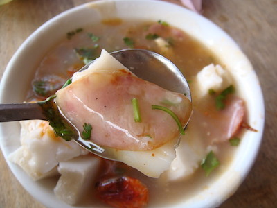

東港肉粿
東港肉粿是根據東港地理環境，漁農結合下的在地美食，故與台南肉粿風味不同。肉粿分湯和乾， 一片片米粿泡在米漿魚湯中，搭著香腸、蝦猴、肉片乾肉粿有幾片白色米粿、香腸切片、蝦猴、肉片、香菜。米粿沾有一點肉汁，與香腸同叉起一起吃還不錯，這裡的米粿有米香氣，口感爽彈，加入一點辣醬混合吃，簡單的美味。
最特別的就是搭配肉粿的魚湯，嚐起來有勾芡感，裡頭可見細碎魚肉，據說這樣的湯頭是以虱目魚骨與大骨熬成，再加入米漿使其濃稠，海陸融合滋味相當獨特，一邊叉起粿一邊喝著魚湯，感覺胃暖暖的，同享肉香與魚鮮，是一款屬於東港在地特色早午餐。
